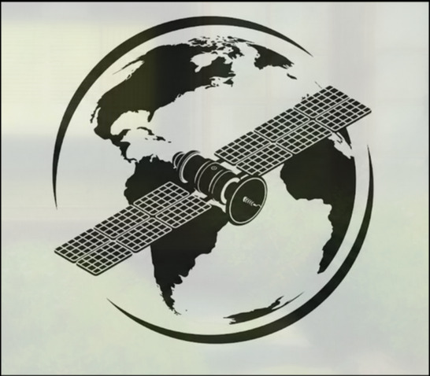
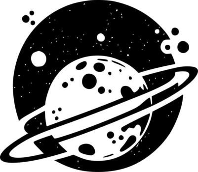
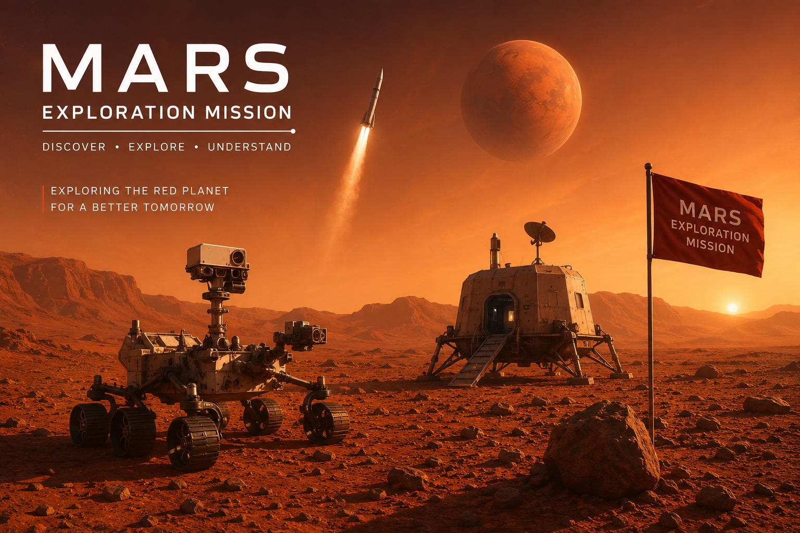
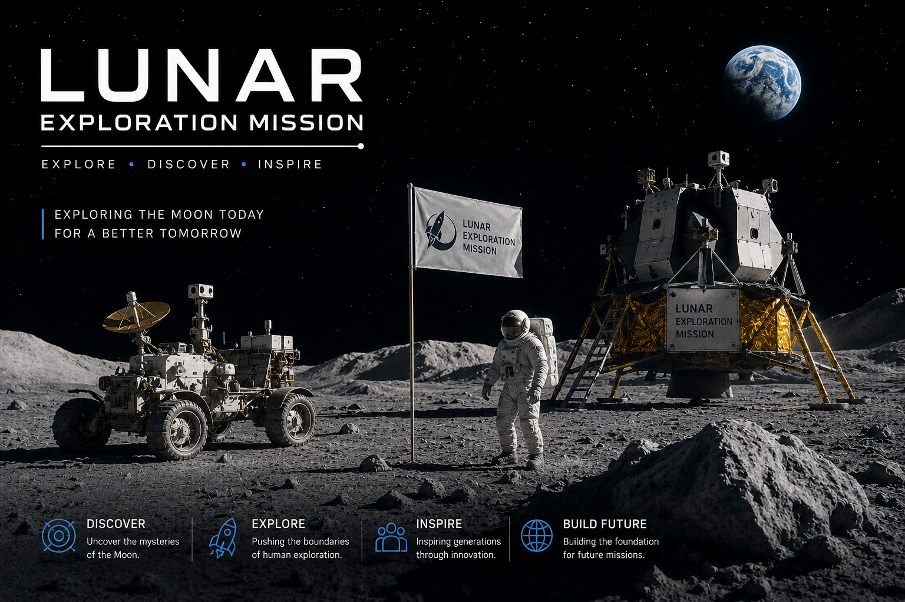
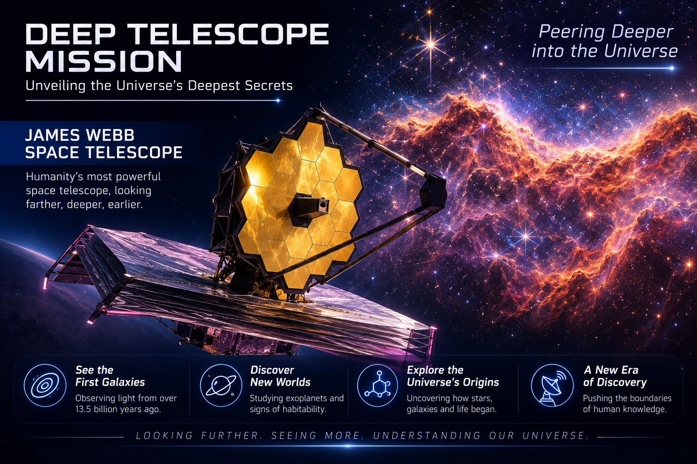

Rocket Launch
Delivering reliable and efficient launch systems designed for modern space missions. Every launch is engineered with precision, safety, and performance in mind.
Beyond Earth. Beyond limits.
From launching next-generation satellites to planning future missions beyond Earth, we push the boundaries of innovation to connect, protect, and inspire the world through space technology.
Delivering reliable and efficient launch systems designed for modern space missions. Every launch is engineered with precision, safety, and performance in mind.
Advanced AI-powered navigation enables spacecraft to make intelligent decisions during every mission. From trajectory planning to autonomous course correction, precision comes first.

A global satellite network providing seamless communication and real-time connectivity. Stay connected across Earth and beyond with uninterrupted coverage.

Explore distant worlds through high-resolution data collection and scientific analysis. Unlock new discoveries that expand our understanding of the universe.
Military-grade encryption ensures secure communication between Earth and deep-space missions. Your data remains protected across every transmission.
Innovative propulsion and energy-efficient systems reduce environmental impact while extending mission capabilities. Building a cleaner future for space exploration.

Mars Exploration is dedicated to unlocking the secrets of the Red Planet through advanced robotic missions and cutting-edge scientific research. By studying its surface, atmosphere, and geological history, we pave the way for future human exploration and sustainable settlements beyond Earth.

Lunar Base Alpha is designed to establish a permanent human presence on the Moon through advanced habitat systems and sustainable infrastructure. By utilizing local resources and conducting groundbreaking scientific research, it serves as a critical stepping stone for future missions to Mars and beyond.

The Deep Space Telescope is built to observe the farthest reaches of the universe with unmatched clarity and precision. By capturing distant galaxies, exoplanets, and cosmic phenomena, it helps scientists uncover the origins of the universe and search for worlds that may support life.
Successful Missions
Active Satellites
Mission Success Rate
Global Research Partners